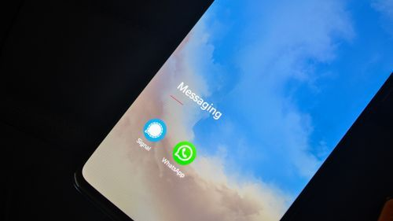

AI & Rumor Checks
Will AI Really Take Your Job? What the Data Actually Shows
The internet says AI will replace everyone by next year. Here is what the data actually shows — verdict inside.

A blue-purple circle appeared in WhatsApp — Meta AI — and the worry followed naturally: is this assistant quietly reading my conversations with friends and family?
According to how WhatsApp presents the feature, Meta AI takes in only the messages where you involve it: tagging @Meta AI in a chat, or opening a direct conversation with the assistant. Your ordinary chats with people are end-to-end encrypted and are not scanned to feed the assistant. Those are two separate lanes.
You cannot fully remove the button in most regions, but you are not obliged to use it. Ignore the circle and it stays out of your conversations.
There is no indication of that. Person-to-person chats are end-to-end encrypted, and the assistant is built around messages you deliberately send it.
The internet says AI will replace everyone by next year. Here is what the data actually shows — verdict inside.
“AI is alive”, “AI is never wrong”, “AI will hack everyone” — 5 myths almost everyone believes, calmly debunked.
You don’t need to pay for good AI. These free tools cover writing, images, coding and research — no credit card.